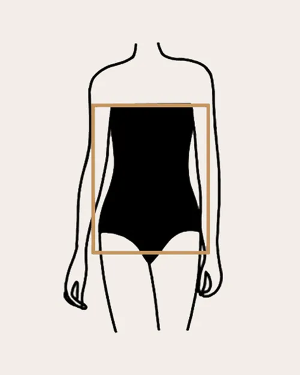

The rectangle body shape, also known as the "straight" or "athletic" body shape, is characterized by a balanced and relatively uniform width of the shoulders, waist, and hips. People with this body shape tend to have fewer curves, with a more straight-up-and-down silhouette.Nearly the same width, creating a straight line. Minimal waist definition, giving a more straight appearance.Often associated with an athletic build and a more toned physique.
